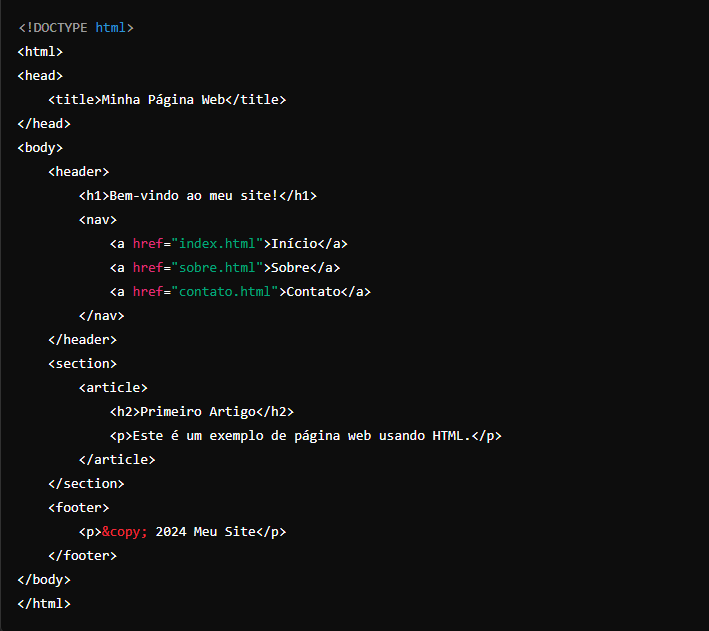

Aprendendo HTML Básico
O que é HTML

HTML (HyperText Markup Language) é a linguagem de marcação padrão usada para criar e estruturar páginas na web.
Ele define a estrutura básica de uma página web através do uso de tags, que são elementos que indicam como o conteúdo deve ser exibido no navegador.
Principais Características do HTML
Estruturação de Conteúdo
Voltar
HTML organiza o conteúdo em elementos como cabeçalhos, parágrafos, listas, links, imagens e tabelas.
- Cabeçalhos (h1 a h6): Usados para definir títulos e subtítulos, com h1 sendo o mais importante e h6 o menos importante.
- Parágrafos (p): Utilizados para agrupar blocos de texto em parágrafos.
- Listas:
- Ordenadas (ol): Listas numeradas, onde cada item é representado por um número.
- Não Ordenadas (ul): Listas com marcadores, onde cada item é representado por um ponto.
- Itens de Lista (li): Elementos que definem itens individuais dentro das listas ordenadas e não ordenadas.
- Links (a): Criam hyperlinks que conectam diferentes páginas e recursos na web.
- Imagens (img): Permitem a inclusão de imagens nas páginas web.
- Tabelas (table, tr, td): Usadas para organizar dados tabulares.
Semântica
Voltar
As tags HTML fornecem significado ao conteúdo, melhorando a acessibilidade e SEO (Search Engine Optimization). Tags semânticas incluem:
- header: Define o cabeçalho de uma seção ou página.
- article: Representa um conteúdo independente que poderia ser distribuído separadamente, como um artigo ou post de blog.
- nav: Indica uma seção de navegação que contém links para outras páginas ou seções do site.
- footer: Define o rodapé de uma seção ou página.
- section: Agrupa conteúdo relacionado dentro de uma página.
Hipertexto
Voltar
HTML permite a criação de hiperlinks, que são links que conectam diferentes páginas e recursos na web.
Isso é feito utilizando a tag (a), que pode apontar para URLs internas e externas, permitindo uma navegação eficiente e fluida entre diferentes conteúdos e sites.
Multimídia
Voltar
HTML suporta a inclusão de diversos tipos de mídia, tornando as páginas web mais interativas e informativas. Exemplos incluem:
- Imagens(img): Para incorporar imagens diretamente nas páginas.
- Áudio(audio): Para incluir conteúdo de áudio, como música ou podcasts.
- Vídeo(video): Para incorporar vídeos, oferecendo suporte a controles de reprodução, legendas e várias fontes de vídeo.
Exemplo Básico de HTML

Material de apoio utilizado: Google